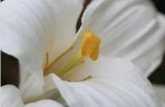
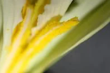
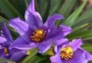

Boas-vindas ao Scientia Amabilis
O nome do projeto vem do latim e significa "ciência amável", pois já sabemos que é impossível não
amar a botânica, não é mesmo? E é por isso que esse projeto se compromete em realizar a divulgação
científica, por meio de diversas plataformas, dessa área. Além disso, temos a finalidade de atender
o maior número de pessoas possível, afinal, a botânica tem espaço para muitos amantes curiosos.
Ao longo de 2022, definimos o perfil desse projeto, incluindo nossa identidade visual. Essa logo foi
a mais votada entre 3 opções, e inspirada pelas espécies de árvores nativas chamadas de ipês
(gêneros Handroanthus e Tabebuia, ambos da família Bignoniaceae).
Os ipês são conhecidos por sua resiliência e por se mostrarem majestosamente floridos nas condições
mais adversas.
Esperamos que este projeto siga o exemplo de resistência em tempo de obscurantismo e que aos poucos
a ciência volte a florescer, encantando a todos os olhares como nossos ipês.
|  |  |  | |
|---|---|---|---|


O Scientia Amabilis contribui para 6 Objetivos de Desenvolvimento Sustentável da Organização das Nações Unidas.